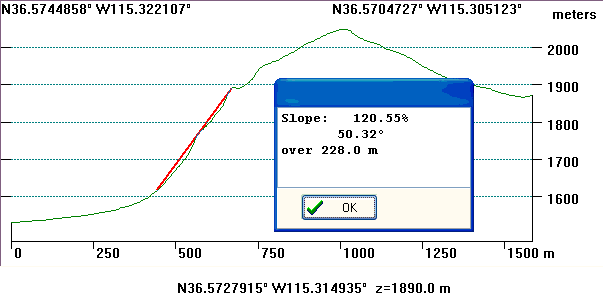

Fault Scarps
A fault scarp is a slope created by motion along a fault. The largest
scarps will form along range front normal faults, where the footwall forms the mountain
and hanging wall forms an adjacent valley.
The best scarps will form along normal faults, because:
- Normal faults typically have a steeper dip than reverse faults, which
makes for a more impressive scarp. Normal faults usually have a
significant vertical offset across active features. If there is little
erosion, the dip of the mountain face or the rift valley may approximate that of the fault that
forms it.
- The geometry of reverse faults, with their overthrust nature, encourages
collapse of the hanging wall.
- Strike slip faults typically have no vertical motion, so instead of
scarps they typically have a valley with sag ponds.
In unconsolidated sediments or weak rocks, the maximum angle will be the
angle of repose, which is typically around 30º.
While these sediments can support very small vertical slopes, these will occur
only in active erosional areas such as stream channels, or the most recent
active scarps, which will rapidly erode
back to the angle of repose.
Often hills will be asymmetrical in cross section, with one
side steeper than the other. In this case the steeper side will generally
be the candidate for the fault scarp.
Fault traces cannot continue forever as straight lines on a curved earth, and
fault ruptures rarely affect more than a few tens of km. Fault traces will
curve, and displacement will die out laterally, perhaps to be replaced by motion
on another fault. Fault blocks are complex three dimensional geometric
features, and must obey the law of conservation of matter/mass. Nature also
abhors a vacuum, and faults cannot open up a hole underground. Thus our notion
of dip and strike for a fault, implying a planar fault surface, will probably be
a useful local simplification of reality.
The direction of lighting in a reflectance
view of a DEM determines which faults will be emphasized. You can adjust
the lighting to best showcase the faults; faults of different orientations may
require different lighting.
The slope shown by digital elevation models depends in part on the data
spacing. The larger the DEM grid spacing, the more generalized the
topography becomes and the gentler the recorded slopes.
|
 |
The west (left) side of this mountain block is steeper than the right, and is
the more likely to be the fault scarp. This range front scarp in hard bedrock has several distinct
segments.
- The upper segment has gentler slopes. Because the faulting
event with each earthquake probably moves the earth less than 10 m,
this range front would have required 40 or 50 earthquakes. The
oldest parts of the scarp have had the longest to be eroded on the
earth's surface.
- A middle stretch, which was measured here with a 50º
slope, might more closely approximate the fault plane because it has
had less time for erosion.
- The talus slope at the base of the
range reflects the buildup of material eroded from higher up the
slope.
- This pattern leads to what is known as a wine glass valley,
which can show up very clearly in a
reflectance view map.
Measure slope from
 Topographic
Profile
Topographic
Profile
Insure that you mentally consider vertical exaggeration
in evaluating the profiles.
|
Fault scarp example
last revised 10/11/2016